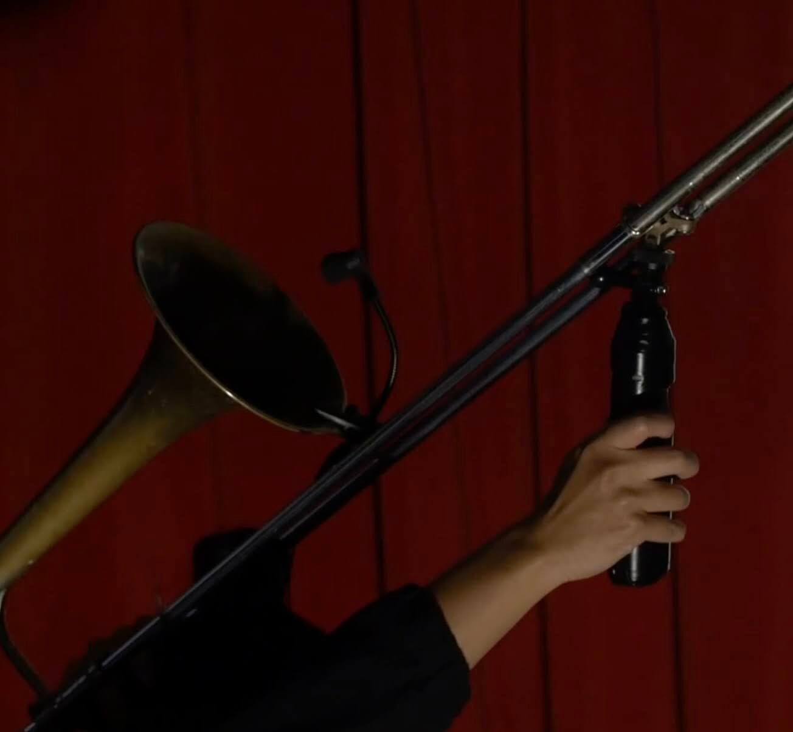
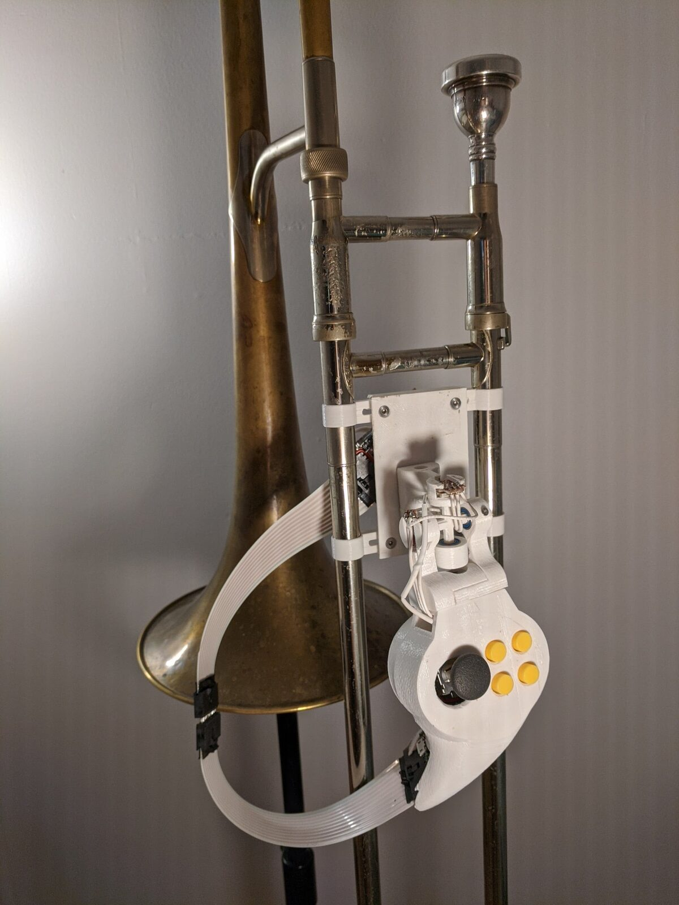
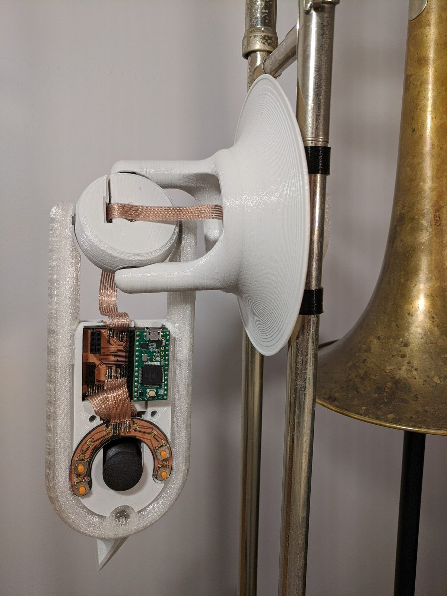
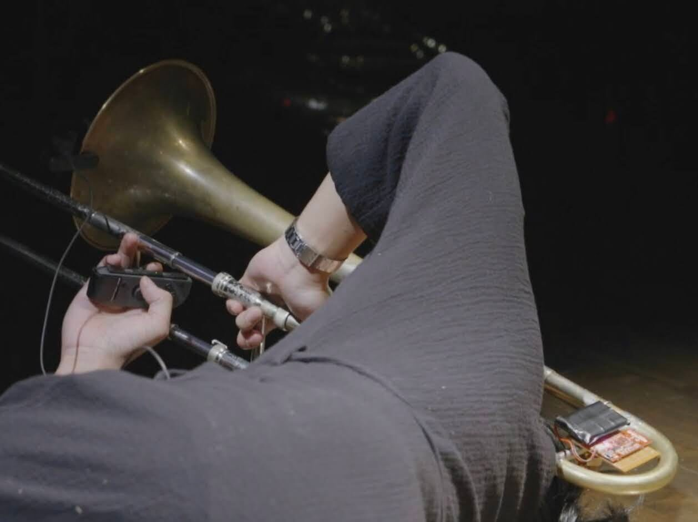
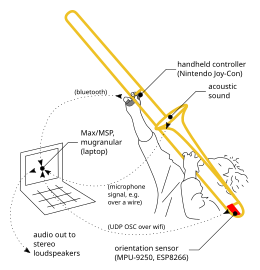

early prototypes and artistic practice with the mubone
abstract
The mubone (lowercase “m”) is a family of instruments descended from the trombone family, a conceptual design space for trombone augmentations, and a growing musical practice rooted in this design space and the artistic affordances that emerge from it. We present the design of the mubone and discuss our initial implementations. We then reflect on the beginnings of an artistic practice: playing mubone, as well as exploring how the instrument adapts to diverse creative contexts. We discuss mappings, musical exercises, and the development of Garcia, a sound-and-movement composition for mubone.
author keywords
mubone, augmented trombone, granular synthesis, mapping, interdisciplinary art, DMI design
CCS concepts
•Applied computing → Arts and Humanities → Sound and music computing
•Human-centered computing → Interaction design → Interaction design process and methods
introduction
The concept of “trombone” applies to a fuzzy group of instruments with uncertain borders. Although there is a clear central embodiment of this instrument, various other forms exist that can be made of brass or plastic, have a slide or set of valves, and even exist in the form of a digital app on a smartphone [1]. Similarly, the concept of “mubone” is meant to delineate a fuzzy group of instruments with shared properties and a distinct but flexible essence.
We are still exploring the boundaries of this design space, or perhaps instrument-family space, and in so doing discovering the essence of the mubone. The conceptual approach of developing an instrument family rather than an individual instrument has been an especially useful tool in this work. Rather than developing the mubone, we have allowed ourselves the opportunity to make many mubones. This has stimulated constant experimentation, and helped us avoid getting too attached to costly but ultimately unsuccessful developments, such as the yoke controllers presented later. It also sensitizes us to the exploratory nature of our work.
In this presentation, we will share our insights so far, based on technical and artistic development since 2019.
related work
The trombone is a common platform for augmentation and electroacoustic exploration. Prior work has variously appropriated the trombone as a speaker resonator and MIDI slider [2], self-actuating feedback instrument [3], and augmented instrument [4], [5]. The mubone, as a form of augmented trombone, is most directly related to other trombone augmentations; trombone expertise is the foundation of performance with these instruments. Farwell [5] developed an ultrasonic slide position sensor, actuator, and loudspeaker mute for the trombone. Lemouton and colleagues [4] use an infrared laser to measure slide position. In our work, although we have attempted to measure slide position, the main focus has been on using the orientation of the instrument rather than the position of the slide. We were also inspired by the handle of the sackbut (a predecessor of the trombone) and the double slide controller of Tomás Henriques [6] in the design of our handheld controllers.
Our granular synthesis environment, described below, draws on the established techniques of granular synthesis [7], especially standout implementations such as GrainTrain [8], Borderlands [9], and Nathan Weitzner’s 3D granular program1. Although we did not initially consider them in our literature review, we realized later that our granular environment is also closely related to concatenative corpus-based synthesis [10], gesture following [11], and real-time adaptive approaches to mapping design [12]. The approach we have taken with the mubone is notable for the performative strategy used to build a corpus and “train” the synthesis environment about gesture and mapping. Sound, movement, and mapping are all recorded in real time as part of a performance.
mubone implementation (presented by Travis)
So far, we have made approximately four different mubones (depending on how you count). In this section, I (Travis, the first author and the main technical contributor to the project) will describe their common features, summarizing the traits we believe may be essential for an instrument to be considered a mubone.
orientation sensor
The first augmentation we added to the trombone was an orientation sensor, and this has proven to be the most enduring and vital feature of a mubone. Typically mounted on, near, or as part of the counterweight (near the fine-tuning slide), the orientation sensor measures the pose of the mubone with respect to a global coordinate system.
All implementations to date have used the MPU-9250 magnetic-inertial measurement unit (MIMU) from InvenSense. This part is now discontinued, but any similar 9-DOF MIMU should work. The data from the MIMU is read, calibrated, and fused by a microcontroller and streamed to a nearby laptop in OSC format. I have mainly employed the ESP8266 in this capacity. To date I have consistently used the sensor fusion algorithm described by Sebastian Madgwick [13], based on the complementary filter introduced by Robert Mahoney [14], to derive the orientation of the instrument from the sensor’s measurements. The sensors calibration constants have been estimated using the method described by Tedaldi and colleagues for the accelerometer and gyroscope [15], and the method described by Li and Li for the magnetometer [16]. The full details of the calibration and sensor fusion processes are outside the scope of this article.
In most of our developments so far, the orientation has been subsequently examined to derive a vector representing the direction in which the mubone is pointed. The rotation (i.e. orientation) of the instrument is given by the sensor fusion algorithm in terms of a unit quaternion:
This is not a convenient representation, so the quaternion is converted into a rotation matrix :
The rotation matrix represents the way the basis vectors of the global coordinate space are changed by the rotation. The first column corresponds to the x-axis, the second to the y-axis, and the third to the z-axis. If there is no rotation, the matrix is an identity matrix, and each column corresponds to the unit basis vector for that axis. When there is a rotation, each column represents the unit vector where the basis vectors are moved to by the rotation. Put another way, each column of the rotation matrix represents one of the basis vectors of the mubone’s local coordinate space, as expressed in the global coordinate frame.
From the rotation matrix it is easy to determine the vector representing the direction in which the mubone is pointed. In our work we align the global coordinate axes so that positive x points to the right, positive y towards the audience, and positive z towards the sky. We consider the mubone to have zero rotation when held naturally, pointing towards the audience, with the slide parallel to the ground. This alignment implies that the y-axis of the mubone coordinate system is aligned with the slide, so the second column of the rotation matrix is a unit vector aligned with the slide, i.e. the direction the instrument is pointing.
We alternately represent the pointing direction of the instrument as a vector ,R2,2,R3,2) (the second column of the rotation matrix) or as a pair of angles derived from the vector (i.e. and ). Latitude and longitude are appropriate since the direction vector is a unit vector, and can thus be considered to represent a unique location on the surface of a sphere. Alternatively, latitude can be called altitude and longitude called azimuth, reflecting a horizontal coordinate system.
We have not yet explored using the angular rate or acceleration data directly in our mappings, but we consider this essential future work that we will eventually undertake.
handheld controller
We have employed five different versions of a handheld controller in our different mubone prototypes. In our earliest experiments, we used a controller from the Nintendo Wii gaming console, including 11 buttons on the top surface, one trigger button, and an accelerometer.


Wii remote attached to the slide.
In later experiments, I developed a rough prototype interface using three buttons and an orientation sensor connected to an ESP8266 (picture not available).
Next, I developed two much more elaborate controllers that we called “yokes'' in rough analogy with the flight yoke in an airplane cockpit. The yokes included a rigid attachment to the slide, potentiometers embedded to measure the rotation and deflection of the controller with respect to the slide, four thumb buttons, a thumb joystick, and in the latter version an analog trigger and three additional buttons on the grip. Both of these prototypes used Teensy 3.2 microcontrollers and streamed SLIP-encoded OSC data over a USB serial port to the laptop.


The first version of the yoke controller.


The second version of the yoke controller. An analog trigger and 3 buttons on the grip are not pictured.
Finally, due to electrical and/or mechanical failure of both elaborate yokes, our most recent experiments have made use of the Joy-Con developed for the Nintendo Switch gaming console.


Player holding a Joy-con while manipulating the slide. The orientation sensor assembly is also visible on the fine-tuning slide.
Although all of these versions of the handheld controller have included some form of orientation or movement sensing, we only briefly experimented with the orientation data from the first yoke controller in our mapping experiments. Instead, it’s the discrete buttons that have been most productive.
Performance-ready reliability has been the most essential differentiator between these controllers. Our more elaborate yoke controllers never saw the light of the stage due to their more complicated design and DIY construction. Although it is more glamorous and exciting, and perhaps a better opportunity for novel research, to design a custom controller, the reliability and ease of replacement that comes with using an off the shelf controller is advantageous. Commercial products have also not noticeably slowed down the artistic and design research we have been conducting; on the contrary, there have been more delays to our schedule due to technical challenges in building the (now broken) custom controllers. This may reflect wider issues in the NIME community of longevity [17] and reliability [18]. Commercial parts also allow for simpler research replication [19][20].
However, as noted by a reviewer, off the shelf parts are not without their drawbacks. Much of the data from the Joy-Con is difficult to access on most platforms. As drivers are not provided by Nintendo, to our knowledge Linux is the only operating system that has robust drivers developed by the open source community. There is also the ever-looming threat of product discontinuation, which will eventually and inevitably require a new version of the handheld controller to be developed or appropriated.
The future may hold opportunities for more rigorous design and engineering of new elaborate yokes, but the use of off the shelf commercial products has so far proved more successful for us despite its shortcomings.
mugranular
Throughout our work with the mubone to date, we have used the same synthesizer as the sonic core of the instrument. A typical granulation-based synthesizer with a spatial twist, the mubone granular synthesizer (mugranular for short) uses the direction vector from the orientation sensor as an index into the granulation sound corpus rather than directly retrieving sound grains based on a time index, as in a typical granulator. The approach is very similar to corpus-based concatenative synthesis [10], but using a gestural feature vector instead of audio features.
In a typical scenario, the player records sound2 in real time, adding it to the corpus along with the concurrent direction vector. Later, previously recorded sounds are retrieved, in granulated form, by pointing the mubone in the same direction. The direction vector is relative to the global coordinate frame, and therefore does not account for the player’s position in space, but as long as the player doesn’t move around significantly from the position where they started recording, then the qualitative effect of mugranular’s recording system is that sounds are recorded into and retrieved from the space around the performer. The actual sonic influence of a gesture is determined while playing; the result is a kind of mapping by demonstration [12], in real time, as part of a performance.
Internally, mugranular provides a certain number of grain clouds, each with a certain number of potentially concurrent grains. In our present implementation, one cloud always follows the current direction vector from the orientation sensor, and is used to retrieve sounds in real time. The eight remaining clouds can be placed in space; this sets the direction vector and granulation parameters so that the cloud will granulate sounds in that direction until picked up. This allows the player to build up layers of concurrent granulation and build enormous sonic environments in real time.
The last important feature of mugranular is its modular construction. The parameters of the synthesizer are set by sending OSC messages to the synthesis program (implemented in C++ using the JUCE framework). The synthesizer has no internal knowledge about the mubone, and the mapping from mubone gestural signals to sound parameters is implemented in a separate program (in our experiments, typically Max/MSP or Pure Data). This has proven to be an advantageous design, allowing for rapid experimentation in the mapping layer without having to edit or compile native C++, which is used to implement the synthesizer. The design is functionally similar to implementing an external object in Max or Pure Data, but without tying the implementation to one or the other programming environment or having to individually support multiple environments. Both mugranular and the mapping program typically run on the same laptop computer, which receives sensor data from the orientation sensor and handheld controller.
Although the gestural control paradigm of mugranular is intensely spatial, to date the sound output has mostly been mono. We have recently implemented stereophonic spatialization based on randomly panning each grain. Further sound spatialization approaches remain as future work.
The main parameters of mugranular, referred to in the rest of the paper, are amplitude (alternately 0 to 1, or -127 to 0 in dB), grain rate (in Hz), grain duration (in ms), recording state and granulating state, and the spatial direction index used to look up grains in the corpus. Except for the last parameter, these all have the conventional meaning employed in granular synthesizers [7]. Development of mugranular can be followed in the git repository for the project, along with a detailed overview of the parameters of the synthesizer.
physical essence of a mubone
Based on these early explorations, we have developed a reasonably clear idea of what a mubone “is,” although aspects of this essence/identity remain somewhat hypothetical. A mubone is an augmented trombone with an orientation sensor, a handheld controller, and perhaps a few other features. The orientation sensor must minimally allow the direction of the instrument to be derived and represented in terms of a vector or latitude/longitude pair. The hand controller must include at least three discrete on-off buttons.
In addition to these essential features, which have been present in all of our designs and experiments so far, we have also considered incorporating measures of the orientation of the handheld controller with respect to the body of the instrument, the angular rate, acceleration, and other kinetic measures of the body of the instrument and the handheld controller, additional continuous and discrete sensors on the handheld controller, and measures of the slide position (and/or its derivatives). These measures seem promising, but they have not yet figured into our exploration of the mubone. In the future, they may become essential components of the instrument’s essence, as the family continues to evolve.
It is a matter of debate whether mugranular is an essential component of a mubone. To date it has been the sole sound synthesis/processing device used with the instrument, which would suggest that it is essential, and the space of possibilities afforded by this combination of granular synthesis and gesture sensing is already vast enough to explore, perhaps for a lifetime. Nevertheless, future development may yet explore other alternatives.


Overview of our current implementation of a mubone.
mubone practice (presented by Kalun)
We have been exploring the artistic affordances of the mubone for 3 years. In this section, I (Kalun, the second author and the main artistic contributor to the project) will recount the development of my interactions with the mubone, from initial improvisations, to in depth ear training, to the development of Garcia, a sound-and-movement composition that was commissioned for the mubone.
mubone improvisation
The mubone was initially designed to be “improv spec,” a modality that I adopted exclusively in the first year of practice. Improvisation was a process-oriented framework for exploration that was useful in discovering the affordances and limitations of the mubone. Rather than being goal-driven, this stage of development was more about free exploration and discovery than achieving a certain specific aim.
Choosing to improvise, or choosing to create an instrument with improvisation in mind, was a way to explore the sonic possibilities expansively. It is a fundamental part of my practice as a musician who both performs free improvisation and who uses improvisation to explore and workshop new material. It was advantageous to use improvisation as both the tool and the application, as I was familiar with this way of working as a musician in the creative music and free improvisation communities in New York City. This phase of the research illuminated certain features that I found to be unique to the mubone. Some of these qualities are summarized in appendix A below.
mapping for improvisation
The initial mapping from mubone to mugranular was simple and minimal. I focused my efforts on exploring the orientation feature of the mubone and kept the other parameters relatively fixed. It would be another two years before I was comfortable experimenting with different mappings as described in the lexicon building section below.
Granular synthesis parameters were set to a generic “freeze-like” preset—440Hz in frequency, 800ms in duration—which had the effect of sustaining any acoustic trombone and extended technique sounds. The direction vector from the orientation sensor was mapped one-to-one to the mugranular spatial index, causing sounds to be qualitatively placed onto the surface of a virtual sphere around me, or the effect of placing sounds at certain locations in a room. The other parameters of mugranular were exposed with a generic slider-oriented graphical interface.
The mubone’s orientation (visualized with the aid of a flashlight), or it’s direction vector, is mapped one-to-one to the mugranular spatial index. The player “places” sounds along a virtual path, i.e. the edges of the room, and retraces this path to “trigger” the recorded material using a “freeze-like” granular synthesis preset.
The only feature of note at this time was the mapping used to control recording and granulating state, which allowed a performer to alternately toggle the state with a brief press, or engage it actively by holding the associated button. Buttons were used to toggle recording and granulating state, and to place or pick up grain clouds. Any button on the hand controller could have been used.
For example, recording is initially not armed. On the leading edge of a button press, recording is turned on. If the following edge as the button is released occurs within 250ms of the leading edge, recording is left on. Otherwise, recording is immediately disarmed when the button is released. If recording is already armed, the leading edge of a button press is ignored and recording is disarmed when the button is released.
movement vocabulary
I had been developing a movement vocabulary with the mubone and trombone most notably with ECHOensemble, a New York City-based sound & movement company with 5 dancers and 5 musicians. We engaged as both sounders and movers and actively sought to find a balance between the two performing artforms.
The core building block for this practice is a singular sound-movement gesture which would evolve organically in relation to itself and with the other performers. The performances are not choreographed and are largely improvised around set structures. All of the gestures that I developed became the foundation for my movement language with the trombone and in turn the mubone. Many of these gestures were used in the choreography for Garcia such as dropping the slide on the floor, scraping the bell on the floor, and blowing air while extending the slide.
practice methodology
The mubone has the potential to operate at the intersection of several different artistic disciplines, some of which I have little formal training in such as movement and theater. I developed exercises to address these disparities in skill level. Doing so was fundamental in faithfully exploring the full expressive potential of mubone and mugranular; I gained a heightened awareness of space and movement as it related to sound. I was also keen on achieving the same level of focus and rigor on mubone that I’m able to harness with the trombone. The exercises are described in appendix B.
lexicon building
Whereas the explorations in the initial improvisation phase emphasized developing taste and getting familiar with the spatial control paradigm of mugranular, the lexicon building phase focused on intensive ear training and systematic enumeration of the sonic affordances of the synthesizer.
With the orientation sensor disabled, I would record a sound (e.g. a wet flutter, a hiss, a single pop, or a pedal tone), and then systematically explore the way mugranular could react to that sound. I would set the frequency to a specific fixed value, then cycle through the duration parameter, noting points of interest. For some of these sounds, the input (e.g. wet flutter) would differ greatly from the processed sound. I also tried to refine my ear by determining blocks of ranges within the frequency and duration parameters that produced just-noticeable differences in the output sound. These ranges became essential building blocks when later developing a piece for the mubone.
It was a useful exercise to name or describe the new sound: high frequency crackle, babbling brook, and so on. Associating words to newfound sounds helped to further define the mubone vocabulary which proved to be convenient for non-musical collaborators. The result was a catalog of sounds and presets that were relatively discipline-agnostic.
mubone performance: Garcia
Garcia is a 10 minute movement-and-sound piece choreographed by Bettina Szabo and composed and performed by myself, Kalun Leung (the second author). The piece is the first of a series of works that were commissioned for the mubone and was developed in a residency-type setting in 2021. It was determined at an early stage that it was important for the mubone to not only exist, and thrive, as a solo instrument, but that it should be versatile in various types of performing arts settings. With the financial backing of the Canada Council for the Arts, we developed 3 new works with 3 different creators from various fields: movement and dance, composition and sound art, and new media art. In this section I describe the development of Garcia, the first of these new works, through workshops with the choreographer and my subsequent development of the sound and mapping.
workshop
The workshop started with a brief period of familiarization for the choreographer. I improvised a few short pieces with the mubone and spent an hour or two going over how the instrument worked. We discussed the features and limitations of both the instrument and my abilities on it. The choreographer led me in a few guided movement exercises to observe my movement and gesture language.
One feature that we identified as relevant for mapping purposes was how “pixelated” we wanted the corpus to be, as in the exercise described in appendix B called “space-sound relationship”. We decided to set up the simplest number of zones, since this was a choreographed movement piece where I can’t rely on my body movements to be super accurate when trying to recall a certain position. We determined three zones for use in Garcia: Head/sky, floor, and horizon.
We sketched out sections to work with (summarized in appendix C), and the choreographer recorded a version of her interpretation for me to reference. At this point, she handed off the work to me to begin building the sound composition. We had general sound ideas but nothing more concrete than a sentence long description.
composition/mapping considerations
After some refining of the choreography, I began designing sounds and treatments of sound that would be artistically suitable for my movements. I found it challenging and artistically interesting to compose to movement especially since it is often the other way around.
One area of feedback that I like to get from audiences is whether they can tell if I am placing and activating sounds in specific spatial (spherical) positions. The answer is usually no. Audiences do not pick up on the spatial control paradigm in improvised performances leaving me to question whether I should make the cause-and-effect obvious for Garcia. In honoring the memory uncovering concept of the piece, I determined that it would be important for audiences to know that space was an active ingredient in the piece.
The result was a mapping that untethered the altitude/azimuth angle pair and used them in isolation in order to maximize the saliency of height (altitude), as in how high or low the mubone was pointing. In performance, this mapping allowed me to anchor the mubone (trombone) on the ground and use it like a big joystick, and in another scene, point the mubone up in various degrees along the horizon, opening up possibilities to assign the angle of the mubone (altitude) to frequency or duration in a very salient way. As these gestures and positions are a large part of the source choreography, it made sense to amplify my movements with this mapping decision.
Based on these considerations, I experimented with three different direction vector mapping presets: latitude only, where it doesn’t matter which direction I point and only the vertical height of the instrument is used to place sounds; longitude only, where only the azimuth is used; and the default mapping where the direction vector is used and sounds can be placed anywhere in the coordinate sphere. In the final version of the piece, only the first two modes were used, because of their more visible cause-effect relationship from an audience perspective, as described above. The mappings used in Garcia are summarized in appendix D.
mubone practice: summary
The approach thus far focuses on the mubone as a hybrid instrument that combines the acoustic trombone with a controller (orienter, handheld control, mapping) and sound synthesizer engine (mugranular). In other words, approaching the mubone as a sound creating tool can be thought of as categorically distinct from a compositional tool like a DAW or even a grid-based digital instrument with sampling and sequencing capabilities.
Garcia and the work leading up to it has only scratched the surface of the mubone as a sound creation tool, and furthermore, has provided a small glimpse of the compositional framework that space and movement has afforded. It would be interesting to focus future work on exploring the compositional capabilities of the mubone, particularly live composition, not unlike live painting where audiences can witness the creation of an artwork in real time.
Garcia was created to have elements of observer participation. Since a large part of the mubone identity is formed around the concept of live composing in space, it was important that the piece had the capability of demonstrating this concept to an audience member, especially being a premiere for the instrument. I wanted the observer to feel like they were discovering and exploring the sound-space with me and to witness the compositional process in performance. The feedback I received from audience members gave me a sense that this was what they felt, especially during the more childlike moments of the performance.
The project also proved the capacity for the mubone to be interdisciplinary both inherently as an instrument and as a tool for working across disciplines. It proved to be an effective common ground for movement and sound and created a space for interdisciplinary artwork to be created. Future work will explore the possibilities of developing versions of the mubone adapted to different instrumentalists, the adaptability of the mubone in a variety of musical genres and artistic disciplines, and the usage of the instrument as a controller, interface, compositional tool, and the combinations within.
conclusion
In this paper we have reflected on the first three years of developing the mubone as an instrument family by designing and playing mubones. This has been a thoroughly collaborative process, not only because it draws on interdisciplinary collaboration with artists in various mediums, but because at its core it is a collaboration between a technically competent artist (Kalun) and an artistically competent technician (Travis). This has proven to be a deeply satisfying and productive relationship, where both art and technology have been able to flourish and develop in exciting and novel directions. It has also proven to be noticeably sustainable, with three years of development so far and no signs yet of slowing down. We note a similar collaborative relationship between, for example, Rebecca Fiebrink and Laetitia Sonami facilitating over 8 years of ongoing development of Wekinator and the Spring Spyre [21], or Joseph Malloch and Andrew Stewart’s roles in the development and support of the T-Stick [22][23] and its growing community of practitioners [24]. Although there is no doubt that numerous other participants and contributors have played essential roles in these projects (the mubone included), this kind of central collaborative duo, with a technical artist and artistic technician, may still be a useful model for NIME research, providing a stable core that could improve the longevity and reliability of the instruments and technology developed compared to solo or large group research. We are admittedly still early in our development, and much remains to be seen, but the core-duo relationship has proven very effective so far.
Considering the second author’s reflections above on the artistic development of the mubone, this account provides an important point of reference on learning, developing mappings, and exploring artistic goals and experiences with a DMI over a long term period. Future work may compare this account with prior research into the creative process working with DMIs, for instance the process of developing mappings [25][26]. Future work may also work to more rigorously assess the influence of specific creative choices on audience members’ experiences of music for the mubone.
The potential design space for all musical instruments is effectively infinite. The potential design space for mubones initially began with this infinity, but we have been consistently narrowing the field of possibilities as we learn more about what a mubone feels like, what we still want to explore, and the immediate vicinity of the specific choices we have made along the way. We have learned that no matter how specific we get there always seems to be a hidden vastness of possibilities. We could spend the rest of our careers just exploring the musical affordances of mugranular with an orientation sensor and a few buttons. At the same time, we are drawn to the unfamiliar space around us. We look forward to continuing to explore the mubone, the depth of it’s identity and the breadth of it.
acknowledgements
This work has been financially supported by the Canada Council for the Arts. Thanks to Alex Daigle, Ajin Tom, and Harish Venkatesan for early collaboration on the sensor fusion algorithm used by the orientation sensor.
ethics statement
We would like to acknowledge the traditional, ancestral, and unceded Indigenous lands where this project was developed. Tiohtià:ke/Montréal and the surrounding areas have historically been a meeting place for many First Nations. We strive to respect the history and culture of these diverse communities and to educate ourselves on the impact of our colonial past.
Whenever possible, the prototyping process made use of materials on hand in order to minimize waste. Reusing materials from other projects and previous prototypes continues to be a sustainability practice we strive to follow. Furthermore, procurement of certain components were motivated by cost savings in an effort to lower the financial barrier to entry for future contributors.
No research participants were engaged. Artistic collaborators and consultants who were engaged for the project were compensated at rates at or above market as determined by the relevant union representing their creative practice.
appendix A: mubone qualities
magic and indeterminacy | As in acoustic improvisation, searching for the unexpected becomes an opportunity for exploration. The mubone offers many opportunities for discoveries, easter eggs, and surprises. This feature is most prominent in the way space (i.e. the corpus) decouples sound materials from the linear timeline in which they were recorded. The corpus acts as a playground for live composition through gesture, a magical experience for both the performer and observer. |
object-oriented interdisciplinarity | One approach to the development of the mubone is to treat it as an object. Doing so allowed for a common “meeting point” between different performing art forms. Thinking of the mubone in this way, i.e. as a prop, opens up possibilities for using the instrument in ways that can serve other artistic goals. |
additive vs subtractive composition | There is a temptation to oversaturate the synthesis engine with layers upon layers of sound. Sonically, this was not a direction I was interested in. Some of the strategies used to mitigate this were to use a momentary latch to record arm instead of a toggle (hold the button rather than click it to toggle) and composing subtractively instead of additively. |
appendix B: spatial/movement exercises
spatial awareness | Ex. 1. Point the mubone at prominent features in the room and anchor and plant sounds at these locations. Ex. 2. Read what you see as a graphic score. |
space-sound relationship | Ex. 3. Divide a wall in various ways with exercises that progress from “lower resolution” (4 quadrants) to “higher resolution” (4x4 grid). Ex. 4. Height focus: divide the space into sky, horizon, ground. Assign sonic themes to each. Ex. 5. Using a fixed search radius, plant a sound in a single location and scrub the edges of that sound. Listen for liminal space between sounding and silence. |
body and gestural awareness | Ex. 6. Perform a sound-movement gesture and repeat the same gesture without the sound. |
music or dance specific focus | Ex. 7. Choose a simple movement pathway (e.g. orbit clockwise). a) Play a melody in slow motion. Scrub back and forth to create a new synthesized melody. b) Moving very slowly along the pathway, stack pitches to form chords. Ex. 8. Saturate the entire spatial corpus with improvised sound. Then, activate the sound with movement only, using the synthesized sound as a movement guide. |
Spatial awareness exercise: Using the edges of a wall and a flashlight as a training aid, the player layers chords at the corners and practices moving between them.
appendix C: Garcia choreographer’s instructions
Section | Instructions |
|---|---|
section 1 going back in time (walking backwards), drawing a spiral that brings you to the ground using the slide as a crutch. | The exploration for this section I think has to do more with sound than movement. But you need to rehearse “using “ the crutch. Normally you would “lean” on it to move the “injured leg”. I’ll let you choose which one it is. |
section 2-ish (ecalato going backwards) Transitional section when you do back and forth from down to standing. | Practice an exploration on this theme: think of going from the crutch to the floor and vice versa. |
section 3 Sniper, clowning, hide and seek. | Exploration on this theme. |
section 4 Continue the journey backwards depicting Hong Kong’s soundscape. | Once again the sound will be very important here. What I need to have is an exploration of movement where you “paint “ your landscape. Think of using the mubone as a brush, and as a pencil. Draw the landscape, the buildings. Think of wide standing positions that will let your torso move big. |
appendix D: Garcia mappings
section | mapping (preset) |
|---|---|
section 1 Mubone used as a joystick anchored to the ground. | Latitude only preset: The angle of the instrument (latitude) is mapped to grain rate. Azimuth/longitude is disengaged. When the instrument is vertical (perpendicular to the floor), frequency hovers near 0 Hz. The effect is a slow pulsing rhythm of recorded material. When the instrument is vertical, the frequency is 180 Hz. Duration is fixed at a range of between 400 to 600 ms, randomized between those values. Search angle is 60 degrees. All recorded sound material is cleared after this section. |
section 2 On the ground, mubone is mostly horizontal and searching, sweeping, sniping along the horizon (orbitally). | Longitude only preset: Longitude is not mapped to a sound treatment parameter (ms or hz), but is used as the spatial index to place and retrieve sounds. Frequency is fixed at 440 Hz, duration is fixed at 800 ms, (resembles sonic freeze effect), search radius is reduced to 15-30 degrees. |
section 3.a Standing and playing at the sky section 3.b Playing at the sky and scanning in a more up-and-down motion. | Same as previous until section 3.b. Latitude “special” preset: same as previous but latitude is now mapped to duration. The higher I’m pointing, the more crispy and short the sound grains are. |
coda From standing and pointing straight up, go to bow, kneel and lie on belly. | Exit sequence is triggered, all mapping is disengaged and the hz and ms will gradually reach 0 over 2 minutes. |
Footnotes
https://youtu.be/HyNhEc4VYmk. Accessed 2022-01-30.
↩In principle any sound could be used, but we have only explored live trombone sounds so far.
↩
Citations
- ↩Wang, Ge, Jieun Oh, Spencer Salazar, and Robert Hamilton. 2011. “World Stage: A Crowdsourcing Paradigm for Social / Mobile Music.” In Proceedings of the International Computer Music Conference.
- ↩Collins, Nicolas. 1991. “Low Brass: The Evolution of Trombone-Propelled Electronics.” Leonardo Music Journal 1: 41–44.
- ↩Snyder, Jeff, Mike Mulshine, and Prior Art. 2018. “The Feedback Trombone: Controlling Feedback in Brass Instruments.” In Proceedings of the International Conference on New Interfaces for Musical Expression, 374–79.
- ↩Lemouton, Serge, Benny Sluchin, and I Stravinsky. 2006. “Using the Augmented Trombone in ‘I Will Not Kiss Your f.Ing Flag.’” In Proceedings of the International Conference on New Interfaces for Musical Expression, 304–7.
- ↩Farwell, Neal. 2006. “Adapting the Trombone: A Suite of Electro-Acoustic Interventions for the Piece Rouse.” In Proceedings of the International Conference on New Interfaces for Musical Expression, 358–63.
- ↩Farwell, Neal. 2006. “Adapting the Trombone: A Suite of Electro-Acoustic Interventions for the Piece Rouse.” In Proceedings of the International Conference on New Interfaces for Musical Expression, 358–63.
- ↩Lemouton, Serge, Benny Sluchin, and I Stravinsky. 2006. “Using the Augmented Trombone in ‘I Will Not Kiss Your f.Ing Flag.’” In Proceedings of the International Conference on New Interfaces for Musical Expression, 304–7.
- ↩Henriques, Tomás. 2009. “Double Slide Controller.” In Proceedings of the International Conference on New Interfaces for Musical Expression, 260–61.
- ↩Roads, Curtis. 2001. Microsound. MIT Press.
- ↩Çamcı, Anıl. 2018. “GrainTrain: A Hand-Drawn Multi-Touch Interface for Granular Synthesis.” In Proceedings of the International Conference on New Interfaces for Musical Expression, 156–61.
- ↩Carlson, Chris, and Ge Wang. 2012. “Borderlands: An Audiovisual Interface for Granular Synthesis.” In Proceedings of the International Conference on New Interfaces for Musical Expression.
- ↩Schwarz, Diemo, Grégory Beller, Bruno Verbrugghe, and Sam Britton. 2006. “Real-Time Corpus-Based Concatenative Synthesis with CataRT.” In Proceedings of the International Conference on Digital Audio Effects.
- ↩Caramiaux, Baptiste, Jules Françoise, Norbert Schnell, and Frédéric Bevilacqua. 2014. “Mapping Through Listening.” Computer Music Journal 38 (3): 34–48.
- ↩Françoise, Jules. 2013. “Gesture-Sound Mapping by Demonstration in Interactive Music Systems.” In Proceedings of the 21st ACM International Conference on Multimedia (MM’13).
- ↩Madgwick, Sebastian O H. 2014. “AHRS Algorithms and Calibration Solutions to Facilitate New Applications Using Low-Cost MEMS.” Phdthesis, University of Bristol.
- ↩Mahony, Robert, Tarek Hamel, and Jean-Michel Pflimlin. 2008. “Nonlinear Complementary Filters on the Special Orthogonal Group.” IEEE Transactions on Automatic Control 53 (5): 1203–18.
- ↩Tedaldi, David, Alberto Pretto, and Emanuele Menegatti. 2014. “A Robust and Easy to Implement Method for IMU Calibration without External Equipments.” In Proceedings - IEEE International Conference on Robotics and Automation, 3042–49.
- ↩Li, Xiang, and Zhi Li. 2012. “A New Calibration Method for Tri-Axial Field Sensors in Strap-down Navigation Systems.” Measurement Science and Technology 23 (10).
- ↩Morreale, Fabio, and Andrew P Mcpherson. 2017. “Design for Longevity: Ongoing Use of Instruments from NIME 2010-14.” In Proceedings of the International Conference on New Interfaces for Musical Expression.
- ↩Sullivan, John D. 2021. “Built for Performance : Designing Digital Musical Instruments for Professional Use.” PhD, McGill University.
- ↩Zayas-garin, Luis, Jacob Harrison, Robert Jack, Andrew Mcpherson, and Queen Mary. 2021. “DMI Apprenticeship: Sharing and Replicating Musical Artefacts.” In Proceedings of the International Conference on New Interfaces for Musical Expression.
- ↩Calegario, Filipe, João Tragtenberg, Christian Frisson, Eduardo Meneses, Joseph Malloch, Vincent Cusson, and Marcelo M Wanderley. 2021. “Documentation and Replicability in the NIME Community.” In Proceedings of the International Conference on New Interfaces for Musical Expression.
- ↩Schwarz, Diemo, Grégory Beller, Bruno Verbrugghe, and Sam Britton. 2006. “Real-Time Corpus-Based Concatenative Synthesis with CataRT.” In Proceedings of the International Conference on Digital Audio Effects.
- ↩Françoise, Jules. 2013. “Gesture-Sound Mapping by Demonstration in Interactive Music Systems.” In Proceedings of the 21st ACM International Conference on Multimedia (MM’13).
- ↩Roads, Curtis. 2001. Microsound. MIT Press.
- ↩Fiebrink, Rebecca, and Laetitia Sonami. 2020. “ Reflections on Eight Years of Instrument Creation with Machine Learning.” In Proceedings of the International Conference on New Interfaces for Musical Expression.
- ↩Malloch, Joseph. 2008. “A Consort of Gestural Musical Controllers: Design, Construction, and Performance.” MA, McGill University.
- ↩Stewart, D. Andrew. 2010. “Catching Air and the Superman.” DMus, McGill University.
- ↩Fukuda, Takuto, Eduardo Meneses, Travis West, and Marcelo M. Wanderley. 2021. “The T-Stick Music Creation Project: An Approach to Building a Creative Community around a DMI.” In Proceedings of the International Conference on New Interfaces for Musical Expression.
- ↩West, Travis J., Baptiste Caramiaux, and Marcelo M. Wanderley. 2020. “Making Mappings: Examining the Design Process.” In Proceedings of the International Conference on New Interfaces for Musical Expression.
- ↩Brown, Dom, Chris Nash, and Tom Mitchell. 2018. “Simple Mappings, Expressive Movement: A Qualitative Investigation into the End-User Mapping Design of Experienced Mid-Air Musicians.” Digital Creativity 29 (2–3).